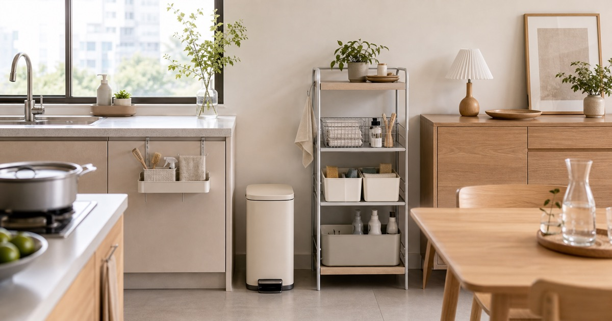

居家整理不用等大掃除：垃圾桶、廚房架、水槽與清潔收納的選購清單
日常整理先看垃圾分類、廚房檯面、清潔工具停放點與餐邊收納，再挑垃圾桶、廚房架、水槽與儲物櫃。整理關係、財務、居家、工作與自我照顧的判斷順序，幫助讀者把日常重新放回可掌握的位置。並補充適合台灣日常的檢查重點與延伸閱讀，方便搜尋後快速掌握方向。

居家整理不必等到大掃除。真正讓家看起來舒服的，是垃圾桶有位置、廚房檯面不堆滿、清潔工具收得回去，餐邊櫃能承接日常備品。這篇從每天會發生的整理動作出發，選擇垃圾桶、廚房架、水槽、餐邊櫃與拖把收納時，都以動線、尺寸與使用頻率為核心。
垃圾桶先看分類位置
垃圾桶不是越大越好，而是要放在最容易完成分類的位置。廚房、餐邊、工作區與玄關可能需要不同尺寸，先決定垃圾會在哪裡產生，再決定桶型。
編輯團隊會把 景敦商行、楡青企業社、凱莎精選家具城、佑澄企業社 等店家的商品放在同一個生活情境裡比較，但不把單一商品寫成唯一答案。判斷順序是尺寸、動線、拿取頻率、收尾方式，最後才看外觀是否與既有家具協調。
常見錯誤是垃圾桶放太遠，最後垃圾會先堆在檯面或桌角。 建議先用紙膠帶在地面標出寬度與深度，確認開門、轉身、拿取與收納都順手，再決定是否下單。
- 先量寬度、深度、高度與開合方向，再看容量。
- 保留一個固定收尾位置，比多買一件單品更能維持秩序。
廚房架要釋放檯面，不是堆高檯面
微波爐架、抽拉架與多層置物架可以讓檯面回到料理用途，但若放太多不常用鍋具，反而增加視覺壓力。先把每日會用的物件留下，再安排垂直層次。
編輯團隊會把 景敦商行、楡青企業社、凱莎精選家具城、佑澄企業社 等店家的商品放在同一個生活情境裡比較，但不把單一商品寫成唯一答案。判斷順序是尺寸、動線、拿取頻率、收尾方式，最後才看外觀是否與既有家具協調。
常見錯誤是架子高度、抽拉方向與插座位置要一起確認。 建議先用紙膠帶在地面標出寬度與深度，確認開門、轉身、拿取與收納都順手，再決定是否下單。
- 先量寬度、深度、高度與開合方向，再看容量。
- 保留一個固定收尾位置，比多買一件單品更能維持秩序。
Elite 嚴選


水槽選擇看檯面、管線與清潔習慣
水槽相關商品要以尺寸、安裝條件與日常清潔方式為準。本文只作一般空間整理角度，不把材質或功能寫成效果承諾。
編輯團隊會把 景敦商行、楡青企業社、凱莎精選家具城、佑澄企業社 等店家的商品放在同一個生活情境裡比較，但不把單一商品寫成唯一答案。判斷順序是尺寸、動線、拿取頻率、收尾方式，最後才看外觀是否與既有家具協調。
常見錯誤是更換水槽前應確認安裝條件，必要時由專業人員評估。 建議先用紙膠帶在地面標出寬度與深度，確認開門、轉身、拿取與收納都順手，再決定是否下單。
- 先量寬度、深度、高度與開合方向，再看容量。
- 保留一個固定收尾位置，比多買一件單品更能維持秩序。
同場景可比較


餐邊櫃是廚房外溢的緩衝區
若廚房櫃體不足，餐邊櫃可以收杯具、茶包、備用紙品與小家電。但餐邊櫃不是倉庫，最好讓每一層都有明確用途。
編輯團隊會把 景敦商行、楡青企業社、凱莎精選家具城、佑澄企業社 等店家的商品放在同一個生活情境裡比較，但不把單一商品寫成唯一答案。判斷順序是尺寸、動線、拿取頻率、收尾方式，最後才看外觀是否與既有家具協調。
常見錯誤是把所有備品全塞進餐邊櫃，只會把整理問題往外移。 建議先用紙膠帶在地面標出寬度與深度，確認開門、轉身、拿取與收納都順手，再決定是否下單。
- 先量寬度、深度、高度與開合方向，再看容量。
- 保留一個固定收尾位置，比多買一件單品更能維持秩序。
清潔工具需要乾燥與停放點
拖把、刷具與清潔備品要有收尾位置。比起買更多工具，更重要的是使用後能停在哪裡、是否會擋住走道、是否容易拿回。
編輯團隊會把 景敦商行、楡青企業社、凱莎精選家具城、佑澄企業社 等店家的商品放在同一個生活情境裡比較，但不把單一商品寫成唯一答案。判斷順序是尺寸、動線、拿取頻率、收尾方式，最後才看外觀是否與既有家具協調。
常見錯誤是本文不宣稱清潔或衛生效果，實際使用仍以商品說明與居家條件為準。 建議先用紙膠帶在地面標出寬度與深度，確認開門、轉身、拿取與收納都順手，再決定是否下單。
- 先量寬度、深度、高度與開合方向，再看容量。
- 保留一個固定收尾位置，比多買一件單品更能維持秩序。
小整理每天三分鐘就能開始
每天晚餐後把垃圾、檯面、餐邊櫃和清潔工具各處理一個小動作，比週末一次全部整理更容易維持。商品只是幫助動線成立，習慣才是最後的關鍵。
編輯團隊會把 景敦商行、楡青企業社、凱莎精選家具城、佑澄企業社 等店家的商品放在同一個生活情境裡比較，但不把單一商品寫成唯一答案。判斷順序是尺寸、動線、拿取頻率、收尾方式，最後才看外觀是否與既有家具協調。
常見錯誤是先從最常亂的單一區域開始，會比全家一起重整更容易成功。 建議先用紙膠帶在地面標出寬度與深度，確認開門、轉身、拿取與收納都順手，再決定是否下單。
- 先量寬度、深度、高度與開合方向，再看容量。
- 保留一個固定收尾位置，比多買一件單品更能維持秩序。
可順手比較的品牌
FAQ
垃圾桶要選腳踩還是開蓋式？
要看放置位置與使用習慣。廚房常見腳踩式較方便，工作區或客廳可依空間選擇較安靜的款式。
廚房架會不會讓空間更亂？
如果沒有先分類就直接上架，確實可能更亂。建議只放每天或每週會使用的物品。
本文推薦水槽是否代表安裝適合所有廚房？
不是。水槽需依檯面、管線與安裝條件判斷，實際規格與施工請以商品頁與專業評估為準。
下一步建議
挑選前先確認尺寸、動線、使用頻率與收尾方式；若要延伸比較，可從本篇整理的店家頁與商品頁逐一查看規格。
重要警語
本文為一般居家整理與餐廚收納情境整理，僅提供尺寸、動線與收納位置的選購參考，不涉及衛生、或個別風險判斷。實際尺寸、材質、活動、價格、安裝條件與庫存請以 momo 商品頁公告為準。
本文含品牌／商品導購連結；若你透過部分商品連結前往選購，Elite Fashion 可能取得合作收益。本文仍以編輯判斷與使用情境整理為主，價格、規格、活動與庫存請以商品頁公告為準。